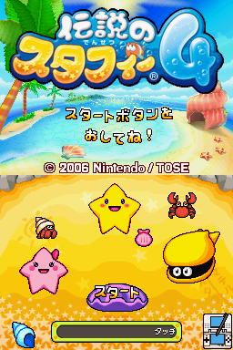

Densetsu no Stafy 4
This article must comply with the non-Pokémon glitches guideline.
| Densetsu no Stafy 4 | |
|  | |
| Wikipedia link | Densetsu no Stafy 4 |
| Developer(s) | Tose, Nintendo |
| Publisher(s) | Nintendo |
| Platform(s) | Nintendo DS |
| Release date(s) | April 13, 2006 (Japan) |
Please note that these glitches only exist in the Japanese versions of this non-Pokémon game, or are otherwise from a game which was only released in Japan.
|
Densetsu no Stafy 4 is a game in the Legendary Starfy series of Marine Action/Platformer games, and the first in the series for Nintendo DS.
It innovated from the previous games with the introduction of a health points and SP (Spill Points) system and the introduction of a map on the touch screen; in maze-like levels.
Contents
Kabutomushi glitches
A glitch involves getting in front of a Kabutomushi without being blocked. This is fixed by entering a door and returning back to the map.
Another two exploits involve using Starly's Wall Jump ability and the ability to bounce off the enemy to climb up two walls with Kabutomushi without defeating their Otafukusou.
| |
| |
Jumping across the water
A glitch when Starfy or Starly enters a puddle of water at the bottom edge, involving being stuck in both a jumping and swimming state.
| |
Mermaid animation glitch
A glitch in a room in Stage 6-4 where there are two Mermaid shells. Saving at one of them and then quickly moving to the next may cause the animation of the second Mermaid to glitch out.
| |
Pearl overflow glitch
Both the Kaimo (Stage 6) and Pearl Dragon (Stage 9) enemies can cause the game to slow down if they release too many pearls. With Kaimo it is even possible to freeze the game, sometimes causing the top screen to heavily glitch out with static.
| |
| |
Old Tower disappearing Kigurumi
A glitch in Old Tower. In one of the rooms with the Pig Kigurumi, Starly can Wall Jump up the map to make it disappear.
| |
Rotating spikes glitch
A glitch in Stage 8-2, which causes two rotating spike sets to merge into one, after opening the Pause Menu while they are on the screen.
| |
Woktopus flame glitches
A glitch in Stage 8, where hitting a Woktopus' flame with a carrot from Propeller Bit can cause the flame to never disappear while still in the same sprite state.
| |